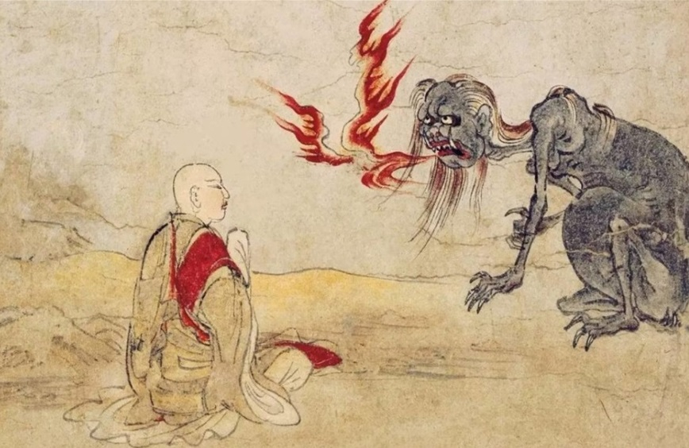
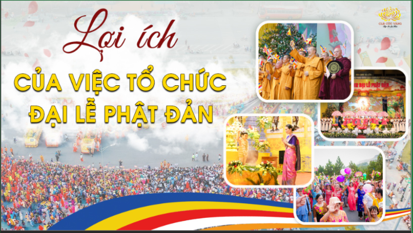
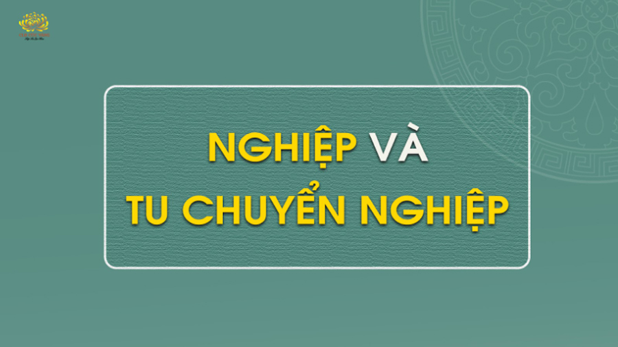
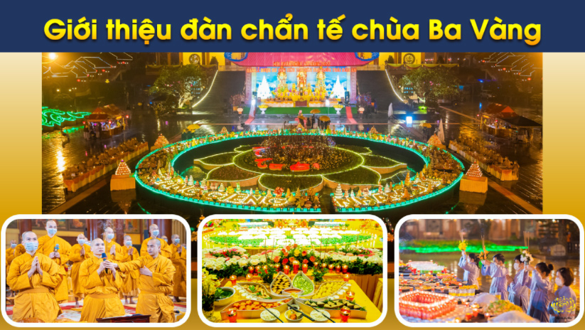

7 cách thực hành để nuôi dưỡng tâm từ, bi, hỷ, xả; giảm trừ tham sân
Tâm từ, bi, hỷ, xả giúp chúng ta giảm trừ tham, sân, si; bớt khổ đau và được an vui, hạnh phúc. Bài viết sẽ hướng dẫn 7 cách nuôi dưỡng bốn tâm vô lượng này.
Chi tiếtTứ vô lượng tâm: 4 tâm giúp bạn giảm phiền não, được an vui, hạnh phúc
Tứ vô lượng tâm là từ, bi, hỷ, xả. Người thực hành bốn tâm này mang lại sự bình an, hạnh phúc, vậy cách thực hành như thế nào sẽ có trong bài viết sau
Chi tiết
Thánh tích Tịnh xá Kỳ Viên: Nơi Đức Phật trải qua nhiều mùa an cư nhất
Tịnh xá Kỳ Viên là nơi Đức Phật trải qua 24 mùa an cư, tại đây vẫn còn các dấu tích như: cây Bồ đề do Ngài A-nan trồng, Hương thất của Phật, giếng nước...
Chi tiết
Sự thật tụng chú Đại Bi tiêu trừ tội chướng, được các vị Thần gia hộ
Sự thật về quan niệm tụng chú Đại Bi tiêu tai giải nạn và hướng dẫn niệm chú Đại Bi đúng cách... sinh thêm phước báu, nghiệp chướng tiêu trừ.
Chi tiết
Bồ đề tâm là gì? 2 lý do khiến bạn phát tâm Bồ đề
Nếu chúng ta làm muôn công đức thiện nhưng không phát tâm Bồ Đề, không thực hành các công hạnh Bồ đề thì đều là làm việc cho Ma Vương.
Chi tiết
Dâng nước cúng dường tắm Phật: Nguồn gốc, ý nghĩa và nghi thức đầy đủ
Dâng nước cúng dường tắm Phật là nghi lễ linh thiêng trong ngày Phật đản. Bài viết cung cấp cách thực hiện nghi lễ giúp được phúc lành.
Chi tiết
Xá lợi là gì? Cúng dường Xá lợi có công đức ngang bằng cúng dường Phật
Xá lợi Phật là kết tinh từ năng lực tu hành của Đức Phật, thành tựu từ vô lượng công đức của Giới - Định - Tuệ.
Chi tiết
Thiên thượng Thiên hạ, duy ngã độc tôn: Nhiều người hiểu sai rằng Đức Phật kiêu mạn
Nhiều người thường hiểu sai ý nghĩa câu nói “Thiên thượng thiên hạ, duy ngã độc tôn”, cho rằng Đức Phật kiêu ngạo. Vậy ý nghĩa đúng của câu này là gì?
Chi tiết
Sự thật về 2 hiện tượng đặc biệt khi Đức Phật đản sanh
Việc hoa sen hóa hiện đỡ chân Ngài là “hình tướng” để thể hiện công đức, chí nguyện của Ngài; Ngài bước đến đâu hình tướng hoa sen xuất hiện đến đó.
Chi tiết
Oan gia trái chủ: Sự thật và cách hóa giải
Oan gia trái chủ là những chúng sinh mà kiếp trước chúng ta hại họ thế nào, bây giờ theo tâm mong cầu của chúng ta, họ sẽ hại chúng ta như vậy.
Chi tiết5 giới là gì? Giữ giới để được sống thọ, giàu có, bình an
Ngũ giới là 5 quy chuẩn đạo đức mà Đức Phật chế ra cho chúng ta thực hành. Giữ giới sẽ mang lại cho người thọ trì nhiều phước lành, sức khỏe, trí thông minh, tài sản,... và những điều tốt đẹp trong cuộc sống.
Chi tiết
Cõi ngạ quỷ là gì và họ tác động tới con người thế nào?
Cõi ngạ quỷ là cõi sống của các hương linh, ngạ quỷ. Các chúng tâm linh này có thể tác động lên con người ở nhiều khía cạnh như sức khỏe, tình cảm, kinh tế,...
Chi tiếtÝ nghĩa của câu “Phát tâm bồ đề, hộ trì Tam Bảo, chuyển tải Phật Pháp, rộng khắp thế gian” mà CLB Cúc Vàng đang thực hành công hạnh.
Chi tiết
Lễ Phật đản: Vì sao nên tổ chức lớn?
Lễ Phật đản là một sự kiện đặc biệt quan trọng và thiêng liêng đối với hàng trăm triệu Tăng Ni và các tín đồ Phật giáo trên toàn thế giới.
Chi tiết
Các hành vi trên thân, khẩu, ý - 3 nơi thân khẩu ý, tạo thành ba nghiệp: nghiệp của thân, nghiệp của khẩu, nghiệp của ý. Nghiệp thì có nghiệp đang tạo tác và nghiệp báo. Nghiệp đang tạo tác tức là các hành vi trong hiện tại của chúng ta.
Chi tiết
Bồ đề đạo tràng tại Ấn Độ - Nơi linh thiêng bậc nhất trên thế giới
Bồ đề đạo tràng tại Ấn Độ được coi là trung tâm tâm linh của vũ trụ, là một bằng chứng sống động rằng Đức Phật có thật.
Chi tiết
Hướng dẫn nhân dân, Phật tử đăng ký quy y Tam Bảo tại chùa Ba Vàng
Hướng dẫn nghi thức quy y Tam Bảo chi tiết nhất dành cho những ai muốn trở thành Phật tử để nương tựa và tu học theo giáo Pháp của Đức Phật; từ đó được lợi ích, hạnh phúc và an vui.
Chi tiết
Tam Bảo là gì? Những điều cần biết về quy y Tam Bảo
Quy y Tam Bảo là việc đầu tiên cần làm nếu muốn trở thành người đệ tử Phật, “Quy” là quay về, “y” là nương tựa. “Quy y” là quay về nương tựa. “Tam” là ba, “Bảo” là quý báu. “Tam Bảo” được hiểu là “ba ngôi báu”, bao gồm Phật Bảo, Pháp Bảo, Tăng Bảo.
Chi tiết
Hướng dẫn đăng ký tham gia trai đàn chẩn tế chùa Ba Vàng
Trai đàn chẩn tế là một trong những pháp đàn tâm linh vi diệu tại chùa Ba Vàng, mang ý nghĩa to lớn với cả cõi tâm linh và người dâng cúng, vậy để tham gia lễ trai đàn chẩn tế như thế nào thì qua bài viết này...
Chi tiết“Chuyện con thỏ”: 3 bài học từ sự bố thí bất nghịch ý của tiền thân Đức Phật
“Chuyện con thỏ” được ghi chép trong Đại Tạng Kinh Việt Nam kể về một kiếp làm thỏ của Đức Phật Thích Ca. Khi ấy, Ngài đã không sợ hãi cái chết mà nhảy vào lửa để bố thí thịt của chính mình cho vị hành khất.
Chi tiếtKính thưa quý đạo hữu! Trong các bài cúng ở chùa, chúng ta thường nghe nói rằng: “Ba đức sáu vị. Cúng Phật và Tăng. Pháp giới hữu tình. Thảy đều cúng dường”...
Chi tiếtCông đức cúng dường Tam Bảo: Được hạnh phúc, sức khỏe và danh vị
Cúng dường Tam Bảo không chỉ là nét đẹp truyền thống mà còn là cách để cầu bình an, may mắn cho bản thân, gia đình,... việc cúng dường mang lại tài sản, sức khỏe
Chi tiết
Cúng dường Tam Bảo: Được phước về sức khỏe, tài sản, danh vị nhiều đời
Cúng dường Tam Bảo là cung cấp, nuôi dưỡng ba ngôi Tam Bảo (Phật, Pháp, Tăng). Đức Phật dạy, việc cúng dường phát sinh phúc báo nhiều đời cho gia chủ.
Chi tiếtTại sao khinh chê Tam Bảo, phỉ báng chúng Tăng lại bị quả báo khổ đau?
Quả báo phải nhận khi khinh chê, ác hại Tam Bảo mà mọi người cần đọc, nếu đã phạm phải thì nên ăn năn sám hối...
Chi tiết
Hiện báo - hậu báo - sinh báo trong đạo Phật là gì?
Quả báo gồm có 3 thời điểm: Hiện báo, hậu báo và sinh báo. Hiện báo: Là làm việc thiện hoặc ác liền có quả báo ngay trong hiện tại kiếp này...
Chi tiếtTha lực và sự bảo hộ của tha lực
Tha lực của chư Phật chính là sự tu hành chứng đắc của chư Phật và Pháp mà Phật thuyết ra cho chúng sinh tu hành. Vậy tha lực của chư Phật có ý nghĩa bảo hộ cho người tu sĩ như thế nào?
Chi tiết